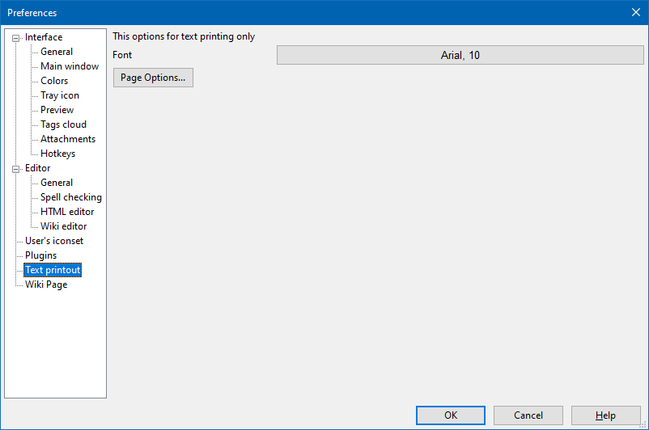

Text printout

This section controls allow to adjust printing parameters of the text pages as well as HTML pages in HTML mode and wiki pages in Wiki and HTML modes.
In this section one can set the default font face and size (the Font button) used when printing the note as well as adjust note printing parameters. Dialogue's look depends on the operating system and printer drivers.
The appearance of the print dialog will vary depending on the operating system and printer drivers.